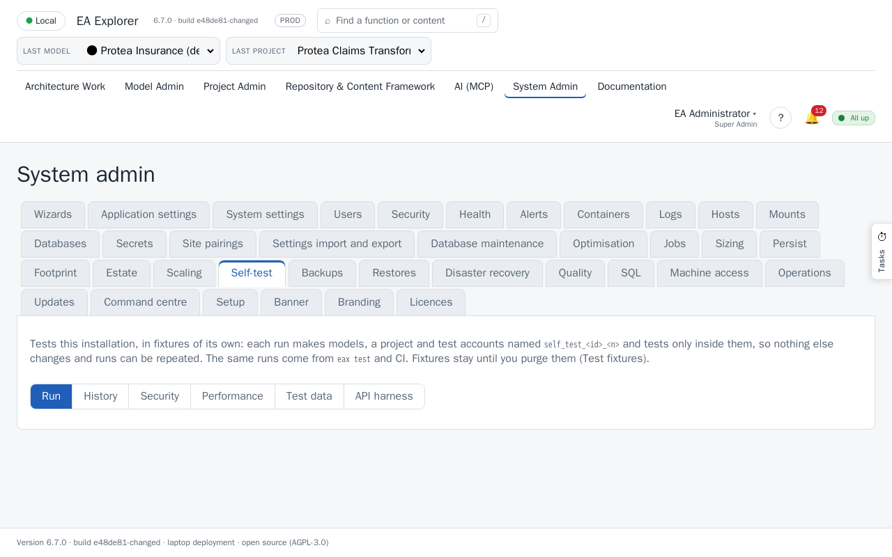

Run the self-test
For: System Admin, Platform developers
Check the installation works: the smoke test in a few minutes, or the full test.

#/admin/self-testWhy do this
The self-test checks that every role can sign in, every area answers and the main journeys work, in its own fixtures, so nothing real changes. Run it after an update or a change of settings. See Running the installation.
The installation is built to look after itself as far as it can, and to ask before anything risky. These tasks are the decisions it leaves to you: what to run, when, and how far to trust a change.
In TOGAF terms: Outside the method: this keeps the tool that holds the Architecture Repository running. See EA Explorer and the TOGAF Standard.
The goal: You know the installation works, end to end.
Before you start You need the Super Admin or IT Admin role.
Steps
- Open System Admin › Tools › Self-test.
- Smoke test: every role signs in, every main area answers, every page opens and the key journeys work once (a few minutes). Full test: every API endpoint as every role, the database, security, and every page and journey in a browser.
- Start it. It makes its own test data, tests, writes a report and removes what it made; nothing else changes.
On the machine: eax test (smoke) or eax test full.
Check it worked
The run ends Passed. Its History entry has the report; each failure says what was asked and what came back.
If something goes wrong
- Run the failed ones again: History, the run, or
eax test failed: only what failed, showing each check then and now.